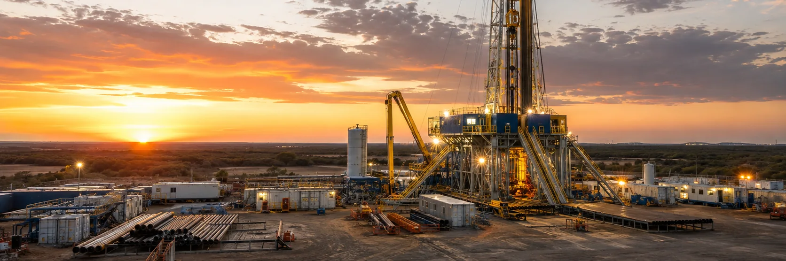
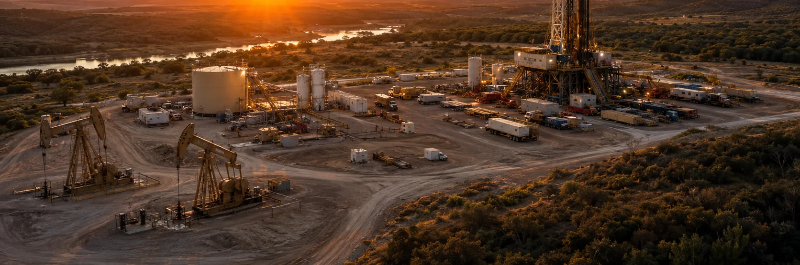
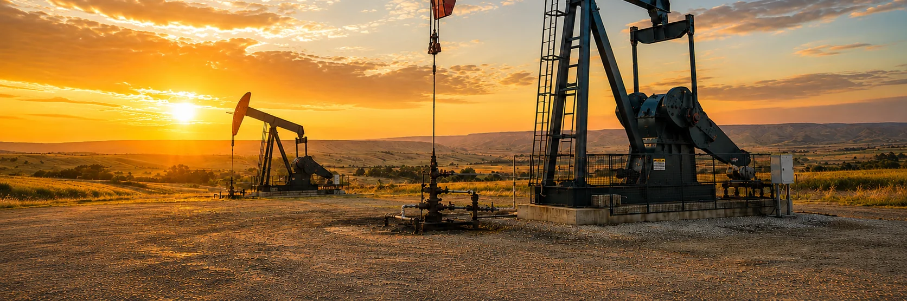

ENERGY & SOCIETY · 6 MIN READ
Why oil and natural gas still matter
The role of hydrocarbons in transportation, manufacturing, heating and a changing energy mix.
Read article ↗
The role of hydrocarbons in transportation, manufacturing, heating and a changing energy mix.
Read article ↗
What takes place between a subsurface target and the first barrel of saleable oil.
Read article ↗
A clear guide to porous rock, fluid flow, traps, well logs and reservoir uncertainty.
Read article ↗
Why water handling is essential to well performance, costs and regulatory compliance.
Read article ↗
A practical overview of supply, demand, inventories, location differentials and uncertainty.
Read article ↗
Well tests are a beginning, not a substitute for sustained production management.
Read article ↗No articles matched your search. Try another topic.
An ownership interest that generally bears a share of exploration, drilling and operating costs and receives a share of production after applicable burdens. Specific rights depend on binding agreements.
The share of production revenue attributable to an interest after royalty and other applicable revenue burdens, before various expenses. It is distinct from working interest.
Barrels of oil per day, a production rate. A test rate or projection is not the same as sustained production.
The work that prepares a drilled wellbore to flow or produce, potentially including perforating, tubing, lift equipment and testing.
A group of sedimentary rocks found in parts of the Gulf Coast region, including Louisiana, with intervals that can serve as petroleum reservoirs.
Intervention on an existing well to repair, maintain or modify well equipment or attempt to address production issues.